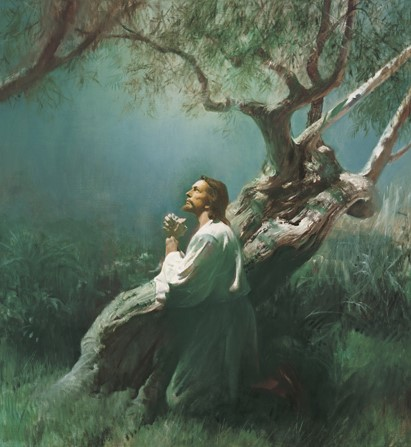
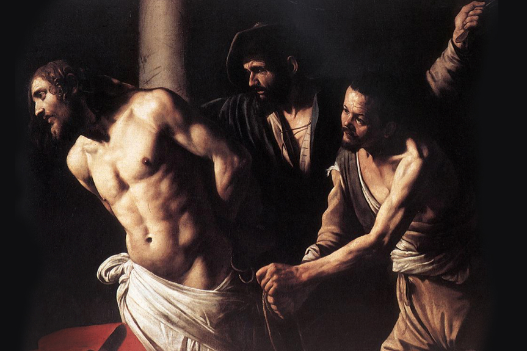
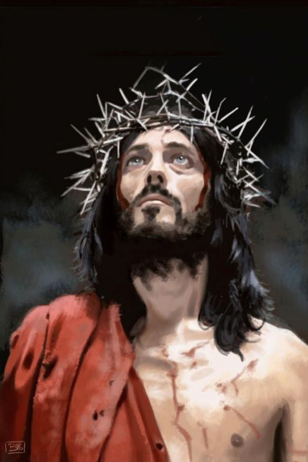
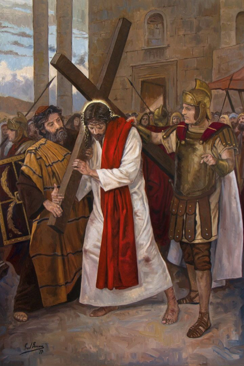

Terço missionário
Mistérios Dolorosos
Terças e sextas
Introdução:
Rezemos juntos o terço missionário, louvando Maria a Mãe de Jesus e nossa Mãe.
Pela força do Espírito Santo, nos unimos ao sofrimento de Maria e de Jesus pela salvação da humanidade.
A oração do terço missionário abre nossos corações às necessidades da humanidade que sofre e nos leva a interceder por todos os povos que enfrentam dificuldades e lutam por uma vida melhor.
Em comunhão com todos os filhos e filhas de Deus nos cinco Continentes, peçamos a intercessão de Maria ao Deus Uno e Trino para que tenhamos paz e abundância na terra.
Oferecimento
Divino Espírito Santo, iluminai nossas inteligências e nossos corações para que, ao meditarmos os mistérios da nossa redenção, possamos imitar o exemplo de Jesus e de Maria, anunciando a todas as pessoas o amor misericordioso de Deus para conosco.
Em comunhão com toda a humanidade, oferecemos nossas orações: pela paz no mundo, pelas pessoas vítimas das injustiças, pela santificação das famílias, por aqueles que anunciam o Evangelho nos cinco continentes, pelas intenções do Papa, por nossas comunidades e por todo o povo de Deus, para que seja sempre mais solidário com os povos do mundo inteiro.
Em comunhão com toda a humanidade, oferecemos nossas orações: pela paz no mundo, pelas pessoas vítimas das injustiças, pela santificação das famílias, por aqueles que anunciam o Evangelho nos cinco continentes, pelas intenções do Papa, por nossas comunidades e por todo o povo de Deus, para que seja sempre mais solidário com os povos do mundo inteiro.
Nossa Senhora, Estrela da Evangelização, fazei que todas as pessoas de boa vontade se deem as mãos e se tornem construtoras de uma sociedade sem fronteiras, justa e solidária.
Rezemos os mistérios dolorosos unindo-nos aos sofrimentos de Jesus por amor à humanidade ferida.
No 1º mistério, contemplamos a oração de Jesus no jardim das oliveiras (Lc 22, 39-44).

Oração pela África
Rezemos pelo continente africano onde vivem milhares de pessoas que nunca ouviram falar de Jesus
A África possui riquezas naturais exuberantes e uma grande diversidade de culturas e religiões, mas sofre as consequências das guerras, do genocídio, da fome e das doenças.
Que a presença missionária na África seja um caminho de libertação e de esperança para todos os povos africanos.
Pai-Nosso...
10 Ave-Marias
Glória ao Pai..
Ó meu Jesus, perdoai-nos, livrai-nos do fogo do inferno, levai as almas todas para o céu e socorrei principalmente as que mais precisarem de vós.
No 2º mistério doloroso contemplamos a flagelação de Jesus (Mc 15, 13-15).

Oração pelas Américas
Voltemos nosso olhar e nossa oração às Américas, continente de profundos contrastes, em que há muita riqueza ao lado de extrema pobreza, tecnologia avançada para alguns e falta de acesso para a maioria. Enquanto alguns desperdiçam, muitos passam fome.
Os povos da América necessitam redescobrir o frescor do Evangelho, superar o egoísmo e viver os valores da partilha e do amor ao próximo.
Que o Espírito Santo ilumine a todos os que se dizem cristãos para viverem o Evangelho com coerência e contribuírem para que haja igualdade de oportunidades para todos.
Pai-Nosso...
10 Ave-Marias
Glória ao Pai..
Ó meu Jesus, perdoai-nos, livrai-nos do fogo do inferno, levai as almas todas para o céu e socorrei principalmente as que mais precisarem de vós.
No 3º mistério contemplamos a coroação de espinhos de Jesus (Mc 15, 16-18).

Oração pela Europa
Agradeçamos a Deus pelo dom da fé que recebemos de tantos missionários e missionárias que vieram da Europa e peçamos pelo retorno dos europeus à vivência da fé cristã.
Há muitas situações na Europa que necessitam de conversão, especialmente por parte dos países mais desenvolvidos que exploram os países mais pobres e produzem políticas que atentam contra a vida.
Rezemos pelas comunidades europeias para que possam ser mais solidárias e acolhedoras especialmente com os migrantes.
Pai-Nosso...
10 Ave-Marias
Glória ao Pai..
Ó meu Jesus, perdoai-nos, livrai-nos do fogo do inferno, levai as almas todas para o céu e socorrei principalmente as que mais precisarem de vós.
No 4º mistério contemplamos o caminho de Jesus para o Calvário (Jo 19, 16-17). .

Oração pela Oceania
Levemos nosso olhar para os povos da distante Oceania que durante muito tempo viveram felizes em suas ilhas a partir de sua cultural ancestral e hoje sofrem os desafios da globalização e da destruição da natureza que afeta até mesmo os oceanos.
Muitos povos, no contato com o mundo globalizado tiveram suas culturas destruídas ou ameaçadas e sofrem pelo desenraizamento cultural, pelas drogas e pela falta de sentido.
Que o Deus da vida toque os corações de todas as pessoas, especialmente as que habitam a Oceania, para que encontrem forças para cuidar da natureza e manter suas tradições.
Pai-Nosso...
10 Ave-Marias
Glória ao Pai..
Ó meu Jesus, perdoai-nos, livrai-nos do fogo do inferno, levai as almas todas para o céu e socorrei principalmente as que mais precisarem de vós.
No 5º mistério contemplamos a morte de Jesus na cruz (Lc 23, 44-46).
Oração pela Ásia
A Ásia é o continente mais populoso do mundo. Concentra grandes potências mundiais, mas também situações de miséria e de marginalização.
No continente asiático também encontramos muitos contrastes entre um alto desenvolvimento tecnológico de um lado, exploração dos mais pobres e fracos, políticas que atentam contra a vida e situações de conflitos e guerra que geram destruição e morte das pessoas e da natureza.
Rezemos por todas as pessoas que são obrigadas a migrar ou a buscar refúgio em consequência da guerra ou perseguições ideológicas ou religiosas.
Pai-Nosso...
10 Ave-Marias
Glória ao Pai..
Ó meu Jesus, perdoai-nos, livrai-nos do fogo do inferno, levai as almas todas para o céu e socorrei principalmente as que mais precisarem de vós.
Conclusão
Infinitas graças vos damos, Soberana Rainha, pelos benefícios que, todos os dias, recebemos de vossas mãos liberais. Dignai-vos, agora e para sempre, tomar-nos debaixo do vosso poderoso amparo e, para mais vos obrigar, vos saudamos com uma Salve Rainha:
Salve, Rainha, Mãe de Misericórdia, vida, doçura e esperança nossa, salve! A vós bradamos, os degredados filhos de Eva; a vós suspiramos, gemendo e chorando neste vale de lágrimas. Eia, pois, advogada nossa, esses vossos olhos misericordiosos a nós volvei e, depois deste desterro, mostrai-nos Jesus, bendito fruto do vosso ventre. Ó clemente, ó piedosa, ó doce e sempre virgem Maria.
Rogai por nós, Santa Mãe de Deus,
Para que sejamos dignos das promessas de Cristo. Amém.